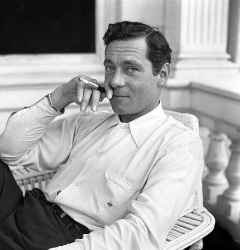
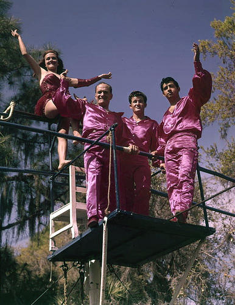

SRQ is a city located in Sarasota County on the southwestern coast of the U.S. state of Florida. It is south of the Tampa Bay Area and north of Fort Myers. Its current official limits include Sarasota Bay and several barrier islands between the bay and the Gulf of Mexico.
These islands separating Sarasota Bay from the gulf near the city, known as keys, include Lido Key and Siesta Key, which are famous worldwide for the quality of their sandy beaches.
Siesta Beach is the number one beach in the 21st annual Top 10 Beach List, produced by coastal expert Dr. Stephen P. Leatherman, Director of Florida International University’s Laboratory for Coastal Research. -DrBeach.com
Today the keys that are included in the boundary of Sarasota are Lido Key, St. Armands Key, Otter Key, Coon Key, Bird Key, and portions of Siesta Key. Previously, Siesta Key was named Sarasota Key. At one time, it and all of Longboat Key were considered part of Sarasota and confusing contemporaneous references may be found discussing them.
John Ringling

Ringling was involved in many businesses, including; railroads in Missouri, Montana, Ohio, Oklahoma, and Texas; oil in Oklahoma; real estate in Florida.
John Nicholas Ringling (May 31, 1866 – December 2, 1936) is the most well-known of the seven Ringling brothers, five of whom merged the Barnum & Bailey Circus with their own Ringling Brothers Circus to create a virtual monopoly of traveling circuses and helped shape the circus into what it is today. He was inducted into the Florida Artists Hall of Fame in 1987.
John was born in McGregor, Iowa, the fifth son in a family of seven sons and a daughter born to German immigrants, Marie Salomé Juliar and August Ringling (a farmer and harness maker). The original family name was "Ruengling". Five of those sons worked together to build a circus empire.
The Ringlings started their first show in 1870 as the "The Ringling Brothers United Monster Shows, Great Double Circus, Royal European Menagerie, Museum, Caravan, and Congress of Trained Animals", charging a penny for admission. In 1882, it was known as "The Ringling Brothers Classic and Comic Concert Company".
By 1889, the circus was large enough to travel on railroad cars, rather than animal-drawn wagons. Admission rose to 50 cents for adults and 25 cents for children.
In 1905, John married Mable Burton. In 1907, the brothers bought the Barnum & Bailey circus for $400,000 and ran the two circuses as separate entities for a few years. John worked the circus with his brothers, declaring "We divided the work; but stood together." John took the advance position, traveling ahead and booking the appearances and Charles was the operating manager. The Ringling Brothers Circus was renowned for its honesty and fair-dealing.
Media

The 'Flying Wallendas' posing for a show in Sarasota, FL.
A native of Sarasota, tightrope walker Nik Wallenda is known internationally for walking across Niagara Falls and a gorge of the Grand Canyon. He is a member of famous Wallenda family of aerialist and daredevil performers who have lived and trained in Sarasota for generations.
Many circus performers lived in Sarasota during the wintertime presence of the Ringling circus and some of the families have remained even though the circus left the city for winter quarters in Venice, Florida. A strong circus tradition remains in portions of the culture of the community.
Sarasota also is known for architects, fine artists, performing arts, and writers who have lived and worked in the community. Among the writers, John D. MacDonald even set many of his novels in Sarasota, integrating landmark buildings into his stories and making institutions such as local restaurants famous. The Mel-o-Dee on Tamiami Trail languishes, but remains, waiting for restoration.
Several movies have been shot using Sarasota locations. One focusing on the Going Vertical program of street art that is held by the Sarasota Chalk Festival premiered internationally when muralist MTO released his documentary film,[38] FL: unpremeditated movie, about some of his work in Sarasota. It is only one of many international films produced about the festival and its artists.
Breaking Amish: Brave New World is a television series set in Sarasota in the neighborhood of Pinecraft. It is a spin-off of Breaking Amish.
A YouTuber named Charles Trippy lives in Sarasota with his wife and two dogs and go by the name of CTFxC.
Need Directions?
Southbound
If heading south on I-95, take the exit for east towards Orlando.